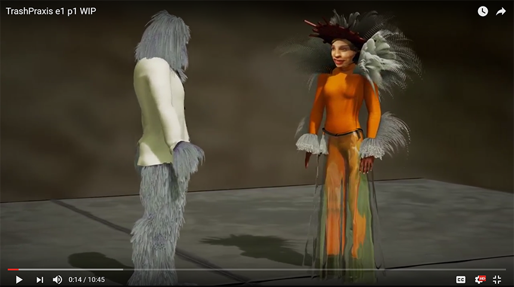

Trash Praxis
The initial motivation for this project was to investigate rapid content creation using Unreal Engine 4. The concept was to create serial VR that could be distributed either as an exectuable (like a game) or as a 360 render distributed via YouTube. For the proof of concept a very simple framework was made: it will be like 2 person a podcast with visuals. The podcast topic was a casual discussion of media and culture between hosts Alfio Leotta and Raqi Syed, both academics in the area of Media studies at Victoria University of Wellington. The project was undertaken as part of the VUW ‘Digital Futures’ research initiative.
Producing media content for Virtual Reality head mounted displays is not particularly rapid and comes with technical challenges. There are two primary vehicles for content delivery. One is 360 degree video. The other is geometry and animation delivered by game engine. Both have their drawbacks and merits both qualitatively and in terms of production issues. This project proposed to deliver in both formats providing empirical data on viable production methods for VR content by utilizing both vehicles. Further, we are unaware of any media being generated in this manner (VR or otherwise) using motion capture virtual production techniques for an episodic talk show.

‘Virtual Production’ is a filmmaking technique refined through the production of the film ‘Avatar’ whereby live action performances are captured using various technologies to be reconstructed into digital images of that performance. This technique is being continually refined as it’s used on high budget film productions like ‘The Jungle Book’, ‘War for the Planet of the Apes’, etc.
By using motion capture virtual production techniques for this project we collected an array of data around our ‘event’. Data collected included multichannel audio, reference video, motion capture data, facial capture data all synced in time. With this data, we can reconstruct the event with computer graphics characters and present the result in multiple formats, allowing us to gauge the result against the production effort for each format.
